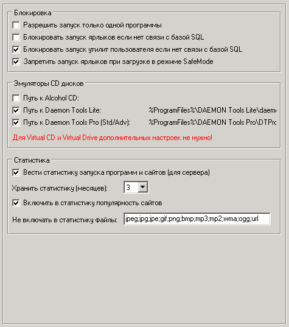

Наиболее важные опции на этой вкладке:
Разрешить запуск только одной программы
В этом режиме нельзя будет запустить более одной программы кроме тех, для которых в свойствах ярлыка отключена опция "Разрешить режим "запуск только одной программы".
Блокировать запуск при отсутствии связи с базой SQL
Полезная опция для защиты от специального разрыва сетевого соединения с сервером
Запретить запуск ярлыков при загрузке в режиме SafeMode
Возможность запрета запуска пользователям ярлыков при загрузке в режиме защиты от сбоев (безопасный режим). Cам режим выбирается при старте системы по нажатии F8
Эмуляторы CD-дисков
Для некоторых программ можно установить в свойствах ярлыка путь к образу с виртуальным диском, который будет автоматически вставляться при каждом старте программы.
Для этого также необходима инсталляция хотя бы одного эмулятора CD-дисков. Поддерживаются VirtualCD, VirtualDrive, Alcohol, Daemon-Tools Lite, Daemon-Tools Pro (Standard/Advanced). Для некоторых из них требуется установить путь в этих настройках.
Для Daemon-Tools Lite рекомендуется отключить в его настройках опцию "Secure Mode"